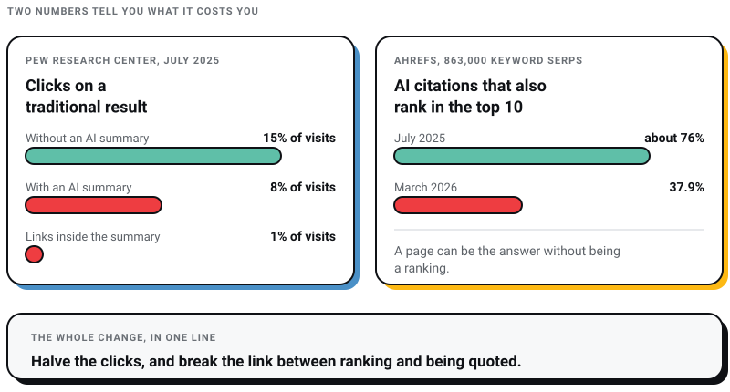
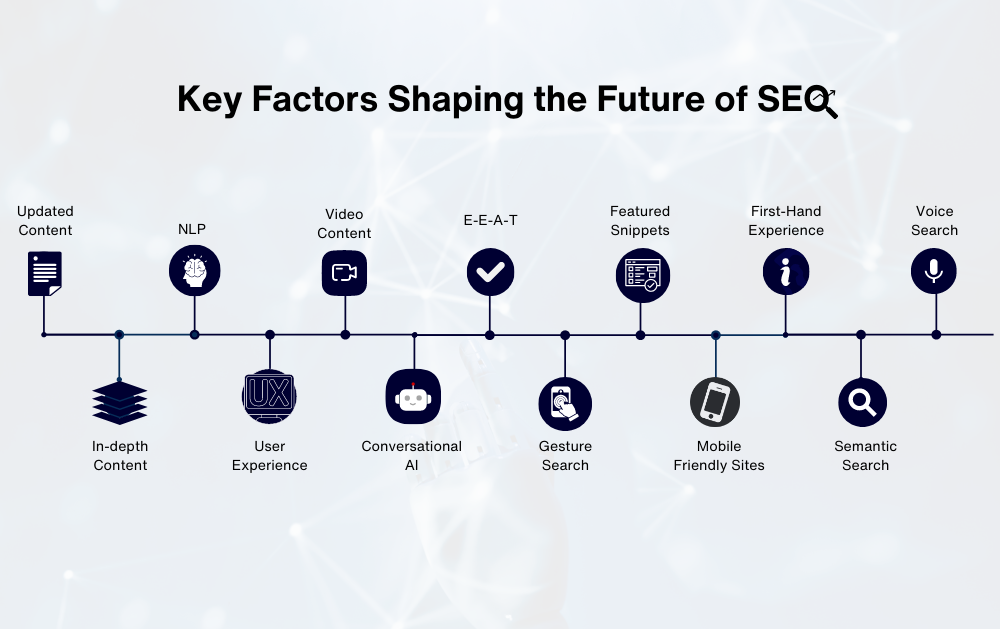
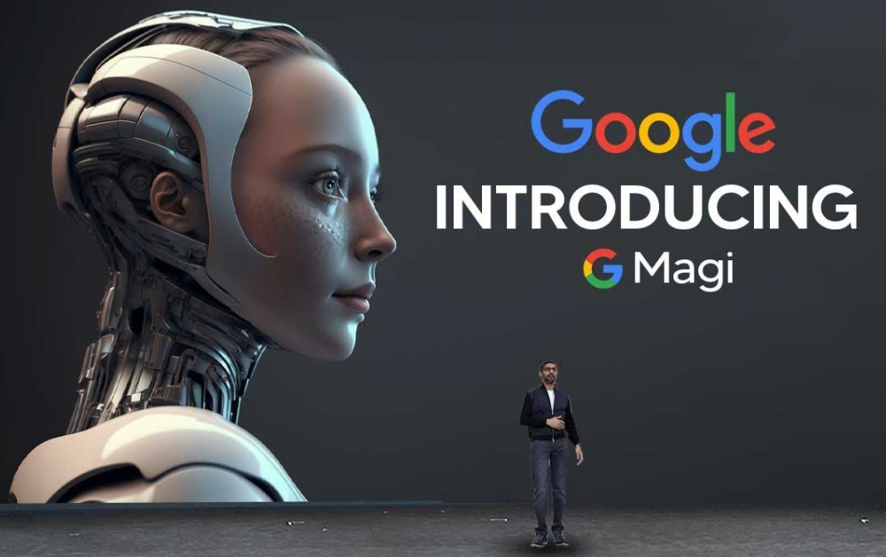
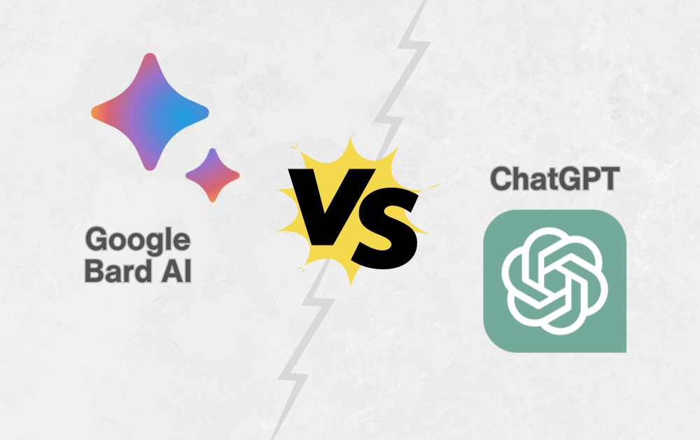
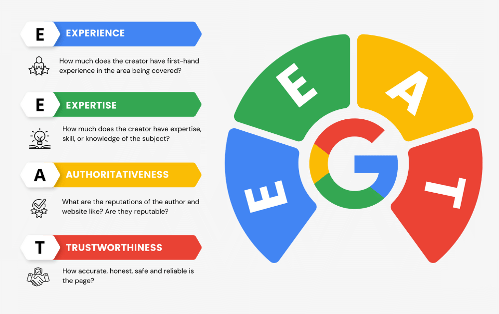
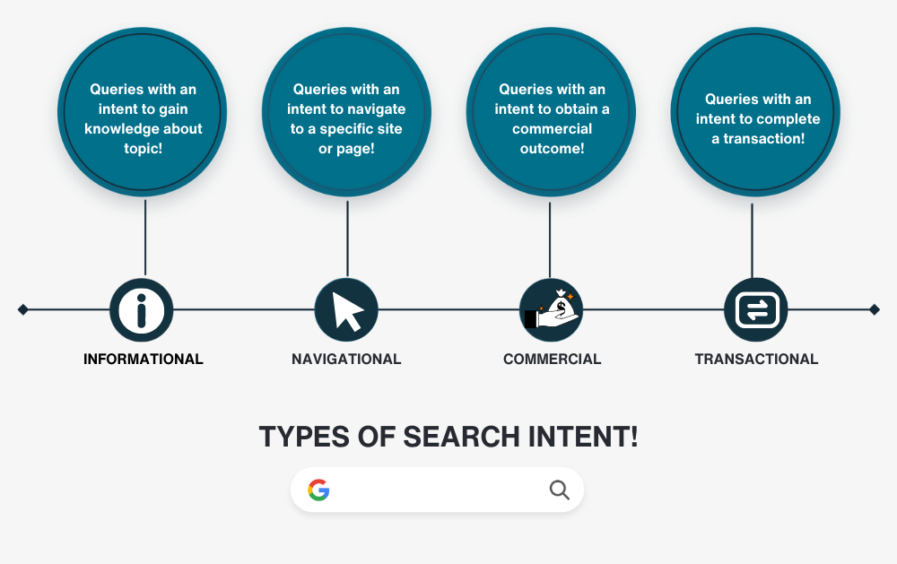
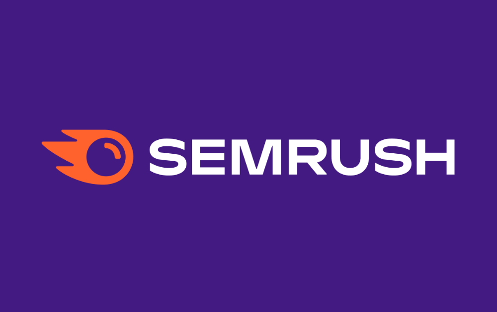
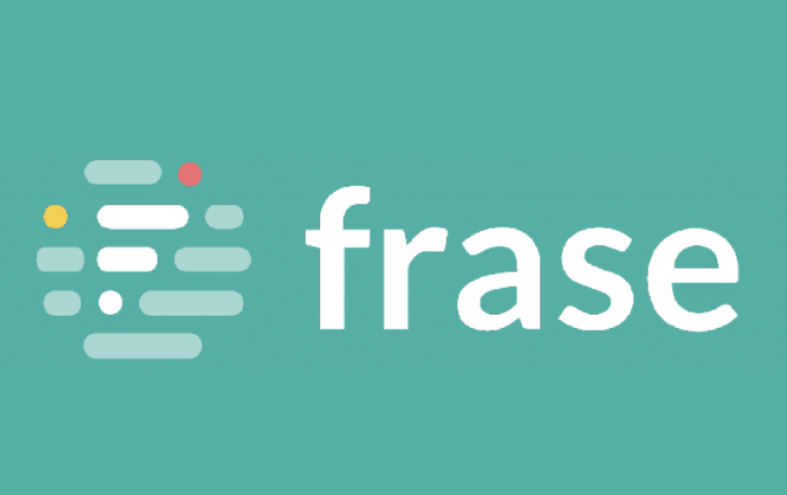
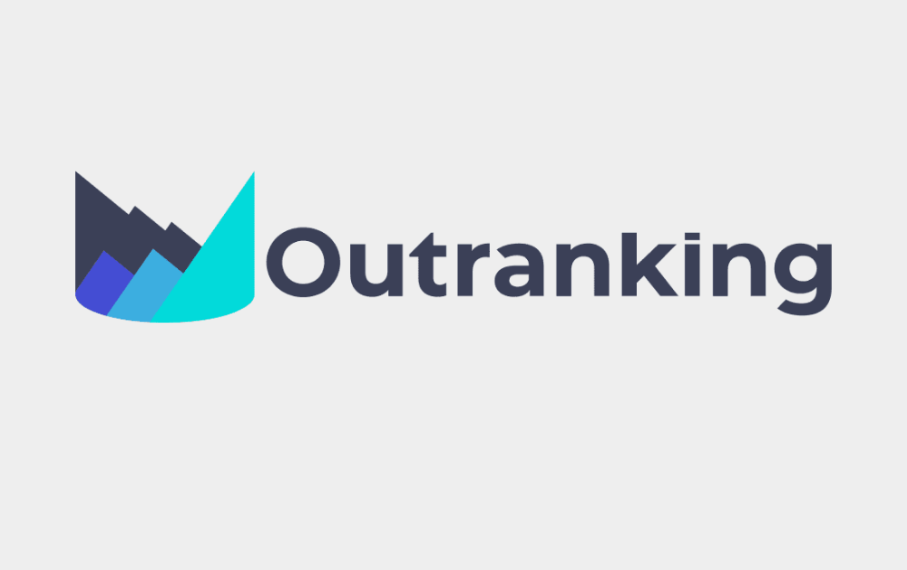
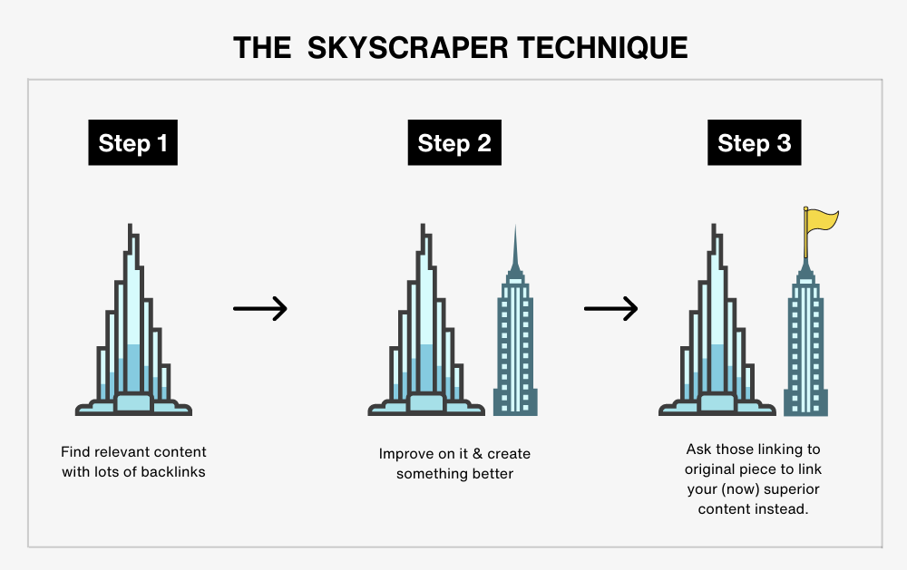

Digital Marketing
Digital Marketing
AEO vs GEO vs SEO: What Actually Matters in 2026 (And What Is Just Noise)
Learn about AEO vs GEO vs SEO. Discover what changed with AI search, what still matters, and how to optimize for Google AI Overviews, ChatGPT, and…

This is what I would tell a client who asks whether search is finished. It is not finished. It moved, and the move is measurable.
I run a studio in Salt Lake, Kolkata that sells this work, so take the argument with data attached rather than on my word. Everything below carries a date and a primary source, including the four things I would bet on for 2029, so that somebody can score me on them when they come round.
Search did not get replaced. It got a layer bolted on top that absorbs the click, and that layer is now the main event. Google's AI Mode passed one billion monthly users within a year of launch, with queries more than doubling every quarter (Google, 19 May 2026).
Two numbers tell you what that costs you. The Pew Research Center followed 900 US adults across 68,879 real Google searches and found people clicked a traditional result on 8% of visits where an AI summary appeared, against 15% where it did not. Clicks on the links inside the summary: 1% (Pew Research Center, July 2025). And ranking no longer buys you a place in that summary: only 37.9% of AI Overview citations come from pages in Google's top 10, down from roughly 76% in July 2025, across 863,000 keyword SERPs (Ahrefs, March 2026).
Halve the clicks, and break the link between ranking and being quoted. That is the whole change, and everything below is detail.

Google's own framing, published 15 May 2026, is more useful than most of what my industry sells against it: "optimizing for generative AI search is optimizing for the search experience, and thus still SEO" (Google Search Central). The craft survived. The scoreboard did not.
Here is the long arc, then the part that actually affects your traffic today.
Now the three years that decided the shape of the present. Every date here comes from Google's own Search Status Dashboard, which is the only ranking-update source I would put in a client report.
Read that list again and notice what is missing. There is no update called "the AI one". The AI surface arrived through product launches, not through the ranking updates my industry watches obsessively. We were staring at the wrong dashboard.

A list of thirteen factors at roughly equal weight is a way of admitting you do not know which ones matter. This list is ranked, and the order is the argument.
Google put this above everything else in its own guidance: creating content people find unique, compelling and useful will influence your presence in generative AI search more than any other suggestion in the guide. Their example is the sharpest thing in the document. A page called "7 Tips for First-Time Homebuyers" against a page called "Why We Waived the Inspection & Saved Money". Same topic. One is a commodity, one is a person who was there.
This is the uncomfortable part for anyone selling content by the word, including us. A model already knows the consensus. It does not need your restatement of it, and it will not cite you for producing one. It cites you when you know something it cannot get elsewhere.
A page a machine cannot fetch cannot be cited, which makes this boring work with a hard floor under it. The current Core Web Vitals thresholds are LCP within 2.5 seconds, INP of 200 milliseconds or less, and CLS of 0.1 or less (web.dev). If your agency's audit still measures First Input Delay, it has been out of date since March 2024, and you should ask what else in the template has not been opened since.
I have seen the LCP threshold quoted as 2.0 seconds in circulating decks. It is 2.5. Check the primary source before you commit a budget to closing a gap that does not exist.
Most sites I audit have never had this conversation. Search access and training access are separate permissions with separate user agents, so it is entirely possible to block the crawler that would have quoted you while leaving the one you meant to block wide open. Whatever you decide, decide it deliberately, and check it against what your server actually returns rather than what robots.txt says.
Put the actual answer near the top, in plain words, before the context and the caveats. Use headings that name what the section contains. This helps a reader who arrived from a summary with a half-formed question, and the machine benefit is a side effect rather than the point.
Do not take this further than it goes. Google is explicit: "There's no requirement to break your content into tiny pieces for AI to better understand it." The fragmentation everyone was selling in 2025 is not a technique, it is a formatting habit.
Identical business details across your site, Google Business Profile, LinkedIn and the directories that matter in your market. AI engines cross-check before they repeat a name, and contradictions read as noise. For a Kolkata studio this is more consequential than it sounds, because local listings here are full of half-abandoned duplicates with old addresses and dead phone numbers on them, and some of those duplicates are yours.
Rank tracking measures the game that is fading. Since June 2026 Search Console has carried a generative-AI performance report covering AI Overviews and AI Mode, and it is worth knowing exactly what it gives you: impressions, broken down by page, country, device and date, with no clicks, no CTR and no queries (Search Console Help). It tells you that you appeared. It will not tell you what appearing earned.
So pair it with something manual. Ask fifteen to twenty real buyer questions across the AI assistants your market uses, monthly, and record whether you appear and who gets cited instead. I set out the full method in how to get your brand mentioned by ChatGPT.
On 15 May 2026 Google published guidance on optimising for generative AI search. I would read it before approving anybody's proposal, including ours, because it contradicts a good deal of what is being invoiced.
It kills three tactics outright. There is no requirement to chunk your content into fragments. There is no need to write in a special register for machines: "You don't need to write in a specific way just for generative AI search." And there is no secret schema, which means schema markup sold as an AI-citation lever is being sold on a claim its own vendor has denied. Keep your Article markup for rich results. Stop paying extra for it as an AI tactic.
What it leaves standing is harder and cheaper: be worth quoting. The reason that lands as a strategy rather than a platitude is the Ahrefs finding above. Roughly a third of cited pages rank beyond position 100. Those pages are not winning on authority or on technical polish. They are winning because they answer one narrow question better than anything else on the web, and nobody can buy that for you.
If you are trying to work out which of the acronyms in your inbox describe real work, I have taken that apart separately in AEO vs GEO vs SEO.

Source: i.ytimg.com
The image above is how the story looked from outside in 2023, when Magi was a rumour that "might" reshape search.
Magi was a codename. It became the Search Generative Experience, which had a rough public start, and then it became the two things you deal with daily: AI Overviews sitting above results, and AI Mode as a separate conversational surface. Gemini 3 came to Search in November 2025, which Google described as the first time it had brought a Gemini model to Search on day one (Google, 18 November 2025). By I/O 2026 the default in AI Mode was Gemini 3.5 Flash.
The 2026 announcements are where the shape of the next few years shows. Google rebuilt the search box for the first time in over 25 years, added generative UI that assembles custom layouts, tables and interactive visuals in real time, and started rolling out agents that monitor the web against your criteria and, in some categories, call businesses on your behalf (Google, 19 May 2026).
Read that last item as a business owner rather than as a marketer. If Google is placing calls to local businesses on a searcher's behalf, then how a business responds to a phone call becomes a ranking-adjacent problem. That is a genuinely strange sentence to write, and I do not think most agencies have priced it in.
Most forecasts written before all this landed on "increased competition" and "adaptation to new metrics", which is the sort of prediction that cannot be wrong because it does not say anything. The real answer was more specific: the summary took the click, and citation stopped tracking rank.

On 8 February 2024 Google wrote: "Bard will now simply be called Gemini" (Google, February 2024). The graphic above is a Bard-versus-ChatGPT comparison, and every row of that genre of graphic was wrong by mid-2024.
You will not find such a table on this page, and the reasoning matters more than the omission. Those tables compare two products on training-data cutoffs, pricing tiers and model version numbers. Every one of those facts has a shelf life measured in weeks. Bard became Gemini, LaMDA gave way to the Gemini line, Gemini 3 shipped in late 2025 and 3.5 Flash by mid-2026. Any table I write today with a version number in it is a table that will embarrass me in eighteen months.
What has not moved in three years is the question underneath: which assistant do your buyers ask, and does it know you exist? That question was answerable in 2023 and it is answerable now, and it does not care what the model is called. If a competitor keeps coming up instead of you, the diagnostic version is in why ChatGPT recommends your competitor.
One piece of India-specific context that does belong in a durable post: when Google reported AI Overviews lifting Google usage by more than 10%, the two markets it named were the US and India. If you sell here, this is not a channel arriving later.
E-E-A-T stands for Experience, Expertise, Authoritativeness and Trustworthiness. It comes from Google's Search Quality Rater Guidelines, and the extra E for Experience was added in December 2022.
Two things worth saying plainly. First, raters do not rank your site. The guidelines describe what Google is aiming for, which makes them a statement of direction rather than a checklist with a score attached. Anyone selling you an "E-E-A-T audit" with a number on it invented the number.
Second, that first E has quietly become the most valuable letter in the acronym. Experience is the one component a language model cannot generate and a competitor cannot copy. Expertise can be summarised. Authority can be bought, slowly and expensively. Having actually done the thing cannot be either. Google's own homebuyer example is a lesson about Experience wearing a different label.

Source: fatjoe.com
Intent is the part of 2023-era SEO that survived intact, and it got more important rather than less. An AI summary is an intent machine: it reads the question, decides what kind of answer the person wants, and assembles it. If your page serves a different intent from the query it targets, you are now invisible rather than merely ranked badly.

Navigational: the searcher wants a specific site and has already decided where they are going. "Pixel Street", "Gmail".
Informational: the searcher wants to know something. "What is CLS", "how long does a rebrand take". This is the intent AI Overviews have hit hardest, and it is where traffic loss shows up first.
Commercial: the searcher is choosing between options and wants comparisons and opinions. "Best CMS for a Shopify migration". This is where being quotable pays, because comparison queries are exactly what people now ask an assistant instead of a search box.
Transactional: the searcher is buying and mostly knows what. "Buy" plus a product name. Least disturbed of the four so far.
The practical shift is in where you spend. Informational pages that exist to catch traffic and funnel it are worth much less than they were in 2023. Commercial-intent pages with a real opinion in them are worth more.
Tool roundups run on feature lists lifted from the vendor's own marketing, usually with a count of how many AI features shipped this quarter. A number that changes every quarter is not a fact worth carrying, so there are none here.
What is worth saying is what the categories are for, since the categories outlast the products.

Source: semrush.com
The all-in-one platform category: keyword research, competitor gap analysis, technical crawling, rank tracking. Useful for diagnosis. The thing to watch is that its core report is still a ranking report, and ranking is the metric that stopped predicting citation. Buy it for the crawl and the competitive view, not for the scoreboard.

Source: frase.com
The content-brief category: read what ranks, produce an outline that covers the same ground. I would now treat that output as the definition of a commodity page. If a tool can derive your outline from the existing top ten, so can everyone else, and Google has said in as many words that this is the kind of page it wants to reward least. Useful for finding the gaps. Dangerous as a template.

Source: outranking.com
The workflow-automation category: outlines, internal link suggestions, optimisation passes at volume. My honest position, three years on, is that automating the whole content pipeline is now a way to manufacture pages nobody will cite. Automate the audit. Do not automate the argument.
None of this means tools are the problem. It means the tools got very good at producing the exact kind of page that Google's 2026 guidance singles out as replaceable.

Brian Dean of Backlinko named the Skyscraper Technique: find high-ranking content with a lot of backlinks, work out where it is thin, publish something better, then ask the people linking to the original to link to yours instead.
It worked, and its logic is now the problem. The method starts from what already ranks, which means it produces a slightly better version of the consensus by design. That was a winning move when the prize was a position in a list of ten. It is a losing move when the prize is being the one source quoted, because a model that already knows the consensus has no reason to cite your improved restatement of it.
The part that still works is the outreach and the honest assessment of where existing coverage is weak. The part to drop is the assumption that "better than the current best" is a strategy. Sometimes the right move is a page about something nobody has covered at all, which no competitive analysis will ever surface for you. I have written up the method and its limits in more detail in the skyscraper technique, and the broader on-page work sits in advanced SEO techniques.
No. But most of the reassurance on offer is worth nothing.
One thing in particular does not count as an argument: asking ChatGPT whether AI will replace SEO and quoting its answer, as though the tool were a disinterested analyst rather than a text generator with no stake in the truth and no access to the future. That is not evidence. It is a mirror.
Here is the argument I would actually make. Three years of data now exist, and they show a discipline being relocated rather than deleted. The clicks fell by roughly half where summaries appear. The link between ranking and citation broke. Google's own position is that optimising for AI search is still SEO. What all three of those have in common is that the underlying job did not change: make a business legible and credible to whatever system is routing buyers this year. Google was the referee. Now there are several referees, and they check the same kinds of credentials.
What is genuinely at risk is not the discipline, it is a specific job description. If your SEO work consists of keyword volume lookups, brief generation from the top ten, and a monthly rankings PDF, a model does all three now, faster and cheaper. That role is going. The role that survives is judgement about what is worth saying and the ability to get a business to say it.
I will be direct about the awkward part, since I sell this work. The version of SEO that is easiest to package and invoice, deliverables with tidy delivery dates, is the version most exposed. The version that holds is harder to sell because it depends on the client having something real to say. That is a worse business model and a better answer.
Predictions with no date and no falsifiable content are decoration. Here are four I would be happy to be scored on, along with what would prove each one wrong.
What is not on that list: interfaces. Voice, gestures and hardware make good conference talks and poor forecasts, and the changes that actually move traffic tend to arrive as a quiet product launch rather than as a named algorithm update.
If you want the current working checklist rather than the argument, it is in the SEO checklist, which is maintained against these same sources.
Is SEO dead in 2026?
No, but the reassuring version of that answer is. Clicks on traditional results fall from 15% to 8% of visits when an AI summary appears (Pew Research Center, July 2025), and only 37.9% of AI Overview citations come from top-10 pages, down from about 76% a year earlier (Ahrefs, March 2026). Google's own position is that optimising for generative AI search is still SEO. The craft holds. The rankings-and-clicks scorecard is what is dying.
What happened to Google Bard?
It was renamed Gemini on 8 February 2024. The underlying LaMDA model gave way to the Gemini line, Gemini 3 came to Search in November 2025, and Gemini 3.5 Flash became the default model in AI Mode globally at I/O 2026. Any guide still comparing "Bard vs ChatGPT" has not been updated in over two years, which tells you how much else in it to trust.
What were Google's most recent algorithm updates?
Through mid-2026: a February 2026 Discover update, a spam update on 24 March, a core update on 27 March, a core update on 21 May that ran nearly 12 days, and a spam update on 24 June. The full record is on Google's Search Status Dashboard, which is the only list worth quoting, because third-party trackers include unconfirmed "updates" that are frequently just noise.
Should I still use FAQ schema?
Not for rich results. FAQ rich results stopped appearing in Google Search on 7 May 2026 and the documentation has been removed. A genuine FAQ section is still worth writing if your readers actually ask those questions, which is a different reason from the one most people were given.
What are the current Core Web Vitals thresholds?
LCP within 2.5 seconds, INP of 200 milliseconds or less, and CLS of 0.1 or less. INP replaced First Input Delay on 12 March 2024. If you have seen 2.0 seconds quoted for LCP, check the primary source on web.dev before spending anything against it.
How do I know whether AI search is sending me anything?
Search Console's generative-AI report has covered AI Overviews and AI Mode since June 2026, but it gives impressions only, with no clicks, CTR or queries. So combine it with AI referral traffic in your analytics and a monthly manual audit: fifteen to twenty real buyer questions asked across the assistants your market uses, with the answers and citations recorded in a sheet.
Does any of this change for a business in India?
The direction is the same, and the timing is not later than elsewhere. When Google reported AI Overviews increasing Google usage by more than 10% for the queries that show them, the two markets it named were the US and India. The practical local difference is entity data, because duplicate and stale business listings are widespread here, and cleaning those up is unglamorous work with a direct effect on whether an assistant can state your details with confidence.
21 min read 40 cited sources Digital Marketing
Author
Khurshid Alam is the founder of Pixel Street, an AI-native design & development studio. Design thinking on weekdays and spreadsheets on weekends.
He writes about growth, design, and AI, mostly because someone has to say the quiet parts out loud.
Digital Marketing
Learn about AEO vs GEO vs SEO. Discover what changed with AI search, what still matters, and how to optimize for Google AI Overviews, ChatGPT, and…
 Digital Marketing
Digital Marketing
Discover the 5 reasons ChatGPT recommends your competitors instead of your business—and how to improve AI visibility, SEO, GEO, and AEO.
 Digital Marketing
Digital Marketing
Want ChatGPT to recommend your brand? Learn how AI chooses businesses, where citations come from, and practical ways to increase your visibility.


{kind=link}